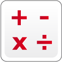

					<table cellpadding="0" cellspacing="0" border="0"><tbody><tr><td>
	
						<h1>数学模块<a name="top"></a></h1>
		<div id="block_341" class="block blockHeader">
				<table cellspacing="0" cellpadding="0" border="0">
			<tbody><tr>
				<td valign="top" class="image"></td>
				<td valign="top" class="description"><div class="text-wrapper">数学模块对其输入进行数学计算，然后输出结果。可以对一个或两个输入进行简单数学运算，或输入具有多达四个输入的公式。</div></td>
			</tr>
		</tbody></table>
			</div>
	<div id="block_342" class="block blockChaptor">
		<div class="title"><a name="ChooseTheMathOperation" style="position:relative; top:-10px;"></a>选择数学运算</div>
		<div class="description"><br>
<br>
 模式选择器<br>
 输入<br>
 输出<br>
<br>
通过使用模式选择器选择模式，来选择要使用的数学运算。选择模式之后，可以为输入选择值。可用输入会因模式而异。</div>
	</div>
	<div id="block_343" class="block blockChaptor">
		<div class="title"><a name="SimpleMathOperationModes" style="position:relative; top:-10px;"></a>简单数学运算模式</div>
		<div class="description">简单数学运算模式使用一个或两个<a href="./index.html?id=Math#InputsAndOutputs">输入</a>，通过简单数学运算计算<a href="./index.html?id=Math#Result">结果</a>。下表中显示了这些模式。</div>
	</div>
	<div id="block_345" class="block blockTable ">
		<table class="blockTable">
		

			<tbody><tr>
<th>模式</th><th>使用的输入</th><th>输出结果</th>			</tr>
<tr><td> 加 <a name="Mode_Add" style="position:relative; top:-10px;"></a></td><td>A，B</td><td>A + B</td></tr><tr><td> 减 <a name="Mode_Subtract" style="position:relative; top:-10px;"></a></td><td>A，B</td><td>A - B</td></tr><tr><td> 乘 <a name="Mode_Multiply" style="position:relative; top:-10px;"></a></td><td>A，B</td><td>A × B</td></tr><tr><td> 除 <a name="Mode_Divide" style="position:relative; top:-10px;"></a></td><td>A，B</td><td>A ÷ B</td></tr><tr><td> 绝对值 <a name="Mode_AbsoluteValue" style="position:relative; top:-10px;"></a></td><td>A</td><td>如果 A ≥ 0，则为 A，如果 A &lt; 0，则为 -A<br>
结果始终 ≥ 0。</td></tr><tr><td> 平方根 <a name="Mode_SquareRoot" style="position:relative; top:-10px;"></a></td><td>A</td><td>√A</td></tr><tr><td> 指数 <a name="Mode_Exponent" style="position:relative; top:-10px;"></a></td><td>A（底数），N（指数）</td><td>A<sup>N</sup></td></tr><tr><td> 高级</td><td>A，B，C，D</td><td>A + B - C* D</td></tr>		</tbody></table>
	</div>
	<div id="block_347" class="block blockTip">
		<div class="title">提示和技巧</div>
		<div class="boxContent">
			<div class="description">如果数学运算的输入值形成非法运算（如除以零或是负数的平方根），则输出结果会是错误值。当用作另一个编程模块的输入时，错误值可能解释为零。</div>
				</div>
	</div>
	<div id="block_349" class="block blockExample">
		<div class="title">示例</div>
		<div class="image"></div>
		<div class="description">此程序从<a href="./index.html?id=UsingSensors_Color">颜色传感器</a>模块的“反射光线强度”输出中减去 50，并使用结果作为电机的“功率”输入。这会使电机在颜色传感器看到深色内容时向后转动，在传感器看到浅色内容时向前转动。</div>
	</div>
	<div id="block_351" class="block blockMode">
		<div class="title"><a name="Mode_Advanced" style="position:relative; top:-10px;"></a>“高级”模式 <a name="Equation" style="position:relative; top:-10px;"></a></div>
		<div class="description"><br>
<br>
在“高级”模式中，数学模块可以通过在一个步骤中使用高达四个输入和几个数学运算，来计算数学表达式。<br>
<br>
使用<a href="./index.html?id=DataWires.html">数据线</a>将多达四个数字值连接到<a href="./index.html?id=Math#X">A</a>、<a href="./index.html?id=Math#Y">B</a>、<a href="./index.html?id=Math#C">C</a> 和 <a href="./index.html?id=Math#D">D</a> 输入。不需要的输入可以保留为空白或 0。<br>
 <br>
单击模块顶部的模块文本字段可以文本方式输入要计算的数学表达式。表达式可以包括名为“A”、“B”、“C”和“D”的输入、数字常量（如“50”）和数学符号（如“+”）。还可以使用所显示列表中的函数和附加括号更改运算的顺序。<br>
<br>
表达式计算的结果在<a href="./index.html?id=Math#Result">结果</a>中输出。</div>
	</div>
	<div id="block_352" class="block blockExample">
		<div class="title">示例</div>
		<div class="image"></div>
		<div class="description">在此程序中，数学模块使用来自颜色传感器的输入和两个变量计算电机功率。来自颜色传感器的反射光线强度连线到 <a href="./index.html?id=Math#X">A</a> 输入，而名为“Gain”和“Power”的变量用于 <a href="./index.html?id=Math#Y">B</a> 和 <a href="./index.html?id=Math#C">C</a>。数学模块中的表达式“(A-50)*B+C”将光线强度减去 50，将结果乘以“Gain”的值，然后加上“Power”的值。</div>
	</div>
	<div id="block_353" class="block blockChaptor">
		<div class="title"><a name="InputsAndOutputs" style="position:relative; top:-10px;"></a>输入与输出 <a name="Parameters" style="position:relative; top:-10px;"></a></div>
		<div class="description">数学模块的输入提供用于数学计算的值。可以将输入值直接输入到模块中。或者，可以通过<a href="./index.html?id=DataWires">数据线</a>从其他编程模块的输出提供输入值。</div>
	</div>
	<div id="block_372" class="block blockTable ">
		<table class="blockTable">
		

			<tbody><tr>
<th>输入</th><th>类型</th><th>备注</th>			</tr>
<tr><td>A <a name="X" style="position:relative; top:-10px;"></a></td><td>数字</td><td>简单数学运算的第一个操作数</td></tr><tr><td>B <a name="Y" style="position:relative; top:-10px;"></a></td><td>数字</td><td>简单数学运算的第二个操作数</td></tr><tr><td>A <a name="Base" style="position:relative; top:-10px;"></a></td><td>数字</td><td>“指数”模式中的底数值</td></tr><tr><td>N <a name="Exponent" style="position:relative; top:-10px;"></a></td><td>数字</td><td>“指数”模式中的指数值</td></tr><tr><td>C <a name="C" style="position:relative; top:-10px;"></a></td><td>数字</td><td>“高级”模式的输入</td></tr><tr><td>D <a name="D" style="position:relative; top:-10px;"></a></td><td>数字</td><td>“高级”模式的输入</td></tr>		</tbody></table>
	</div>
	<div id="block_373" class="block blockStep">
		<div class="title"></div>
		<div class="description">数学模块的输出提供计算的结果。要使用该输出，请使用<a href="./index.html?id=DataWires">数据线</a>将其连接到另一个编程模块。</div>
	</div>
	<div id="block_374" class="block blockTable ">
		<table class="blockTable">
		

			<tbody><tr>
<th>输出</th><th>类型</th><th>备注</th>			</tr>
<tr><td>结果 <a name="Result" style="position:relative; top:-10px;"></a></td><td>数字</td><td>数学计算的结果</td></tr>		</tbody></table>
	</div>
	
			<div id="quick">
				<div class="header"><a href="./index.html?id=Math#header">数学</a></div>
					<div class="quickText">快速链接</div>
					
					<ul>
	<li><a href="./index.html?id=Math#ChooseTheMathOperation">选择数学运算</a></li><li><a href="./index.html?id=Math#SimpleMathOperationModes">简单数学运算模式</a></li><li><a href="./index.html?id=Math#InputsAndOutputs">输入与输出</a></li>					</ul>
			</div>
	
	</td></tr></tbody></table>